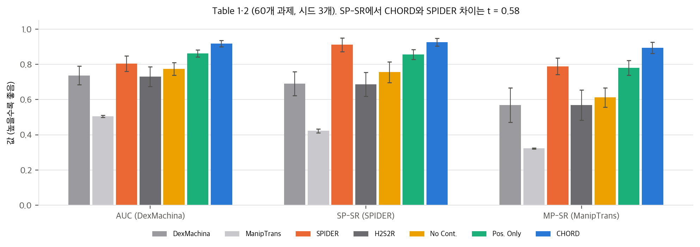
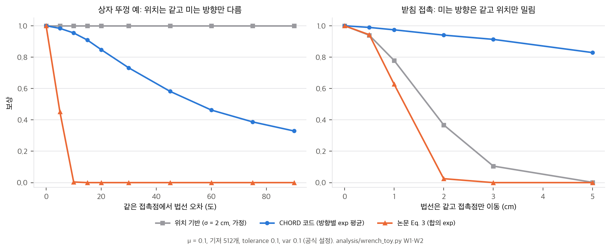
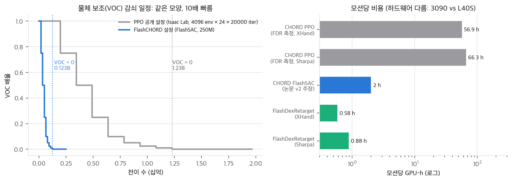

robotic_grounding/ (확인 커밋 9cad120, 2026-11-02)chord.pdf(42.1 MB)와 arXiv v2(41.8 MB)는 단어 12,075개 중 머리글 날짜(2026-8-14 vs 2026-8-17)와 arXiv 세로 도장만 다릅니다. 본문은 같습니다.한 줄 요약: 사람 시연의 접촉을 **"물체에 줄 수 있는 힘·토크의 집합(wrench space)"**으로 바꾸고, 로봇 접촉이 만드는 집합과 512개 방향의 지지값(support function)으로 비교하는 보상을 만들어, 시연 하나당 정책 하나를 RL로 학습합니다. 접촉 위치가 같아도 미는 방향이 다르면 다른 보상을 받습니다.
논문이 내세우는 기여는 세 가지입니다(Sec. 1).
사람 시연 τ_ref = {x_human_t, x_object_t} (MANO 손 + 물체 부품 K개의 SE(3) 자세)
│ QP 미분 IK로 로봇 관절 레퍼런스 x_robot_t (App. D, 프레임당 최대 200회 반복)
│ 프레임마다 손-부품 접촉점 p, 법선 n 추출 → 사람 wrench 행렬 𝒲_h,k (Eq. 1)
▼
시퀀스 하나 = 정책 하나 (Isaac Lab, Sharpa Wave 양손, 손목 6-DoF 부유)
π(a | o_robot, o_object, x_robot_ref, x_object_ref) 잔차 행동: 레퍼런스 + Δ
보상 r = r_task(+ r_relative) + r_imit + r_contact
r_contact = r_cws(Eq. 3) − r_unintend − r_miss
학습 장치: 임의 시점 리셋 + VOC 20스텝 고정 → 커리큘럼 감쇠, 사람 𝒲에서 뽑은 교란 wrench
▼
평가: 물체 15 cm / 40° 이탈 시 실패, 완료율 > 0.7이면 과제 성공 (Sec. 4.1)
04 D4).$$r^k_{cws} = \exp\Big(-\frac{|\max(0,(1-\beta)\sigma_{h,k}-\sigma_{r,k})|^2}{v_{cws}} - \frac{|\max(0,\sigma_{r,k}-(1+\beta)\sigma_{h,k})|^2}{v_{cws}}\Big)$$
03 §2).| 장치 | 내용 | 출처 |
|---|---|---|
| 임의 시점 리셋 | 레퍼런스 위 무작위 프레임에서 시작. 손가락은 레퍼런스 자세와 펼친 자세 사이를 [0, 0.7]로 보간 | App. B Termination and Reset |
| VOC 안정화 창 | 리셋 직후 VOC 배율 1.0으로 20스텝 유지, 그 뒤 커리큘럼 값 | App. B |
| VOC 커리큘럼 | 물체마다 정책 행동 차원이 없는 가상 물체 제어 항이 PD wrench를 걸고, 커리큘럼으로 줄임. DexMachina[1]의 장치 | Sec. 3.2 |
| 교란 | 사람 접촉 wrench 행렬 𝒲_h,k에서 뽑은 wrench로 물체를 밀어, 시연한 접촉 역학과 맞는 교란을 줌 | Sec. 3.2 |
| 잔차 행동 | 손목 위치 0.05 m, 손목 회전 0.15 rad, 손가락 관절 0.15 rad 배율, EMA 0.3. 손목은 힘/토크 추종 제어기 | App. B Action Space, ManipTrans[2] 방식 |
| 관측 | 손목 자세·속도, 손가락 관절, 모든 물체 자세, 손목·손가락·물체 명령 delta, 이전 행동, 손목 좌표계의 접촉 위치·힘 방향 | App. B Observation Space |
| 종료 | 시간 초과, 손목 이탈, 물체 위치·회전 이탈 | App. B |
관측 잡음은 대규모 실험에서는 끄고, 실물 closed-loop 정책 학습에서만 켰다고 적었습니다.
학습 설정 (App. B "Training Details", v2에서 추가): FlashSAC, 환경 2,048개, 시퀀스별 정책을 L40S 한 장에서 약 2시간에 학습합니다. "과제 간 일반화가 아니라 학습 레시피의 확장성"을 보인 것이라고 스스로 한정했습니다. 비교로 DexMachina, ManipTrans, Spider는 과제당 약 10, 20, 4시간이 걸린다고 적었습니다. 이 단락은 v1에 없습니다(§5).
영상 복원처럼 손-물체 정렬이 부정확하면 사람 wrench를 그대로 맞추는 것이 위험합니다. 이때는 r_fc = (1/B) Σ_b 1[σ_r,k,b > ε]로 바꿉니다. 로봇 지지값이 모든 기저 방향에서 양수가 되도록 장려하고, "최대화하면 force closure와 같다"고 적었습니다. 이 동치는 방향이 촘촘할 때만 성립합니다. 512개 무작위 방향에서는 force closure가 아닌 두 점 집기도 r_fc = 1이 됩니다(03 §4).
04 C1).03 §4).04 D3).| 데이터 | 종류 | n | 성공률 (그림 숫자) |
|---|---|---|---|
| HOT3D-1Obj | 강체 | 1,131 | 0.772 ± 0.012 |
| OakInk2-1Obj | 강체 | 147 | 0.786 ± 0.132 |
| OakInk2-2Obj | 강체 | 130 | 0.746 ± 0.038 |
| ARCTIC | 관절 | 196 | 0.814 ± 0.028 |
| TACO | 다물체 | 77 | 0.935 ± 0.028 |
| HOT3D-2Obj | 다물체 | 150 | 0.753 ± 0.035 |
04 C1).60개 과제(강체 17, 관절 24, 다물체 19), 시드 3개입니다. 기준선은 모두 Sharpa 손으로 다시 구현했습니다(App. G).
| 방법 | AUC ↑ | SP-SR ↑ | MP-SR ↑ | JPE (°) ↓ | RPE (cm) ↓ | MPPE (cm) ↓ |
|---|---|---|---|---|---|---|
| DexMachina | 0.737 ± 0.053 | 0.690 ± 0.068 | 0.569 ± 0.097 | 13.10 ± 2.31 | 9.92 ± 1.64 | 15.88 ± 0.70 |
| ManipTrans | 0.506 ± 0.006 | 0.423 ± 0.011 | 0.323 ± 0.003 | 30.07 ± 0.61 | 9.91 ± 0.42 | 21.24 ± 6.19 |
| SPIDER | 0.804 ± 0.044 | 0.911 ± 0.039 | 0.789 ± 0.047 | 41.35 ± 2.44 | 6.99 ± 1.56 | 14.28 ± 2.79 |
| Human2Sim2Robot | 0.730 ± 0.056 | 0.686 ± 0.068 | 0.569 ± 0.085 | 11.80 ± 1.50 | 9.78 ± 1.03 | 16.59 ± 0.51 |
| CHORD | 0.918 ± 0.018 | 0.926 ± 0.022 | 0.894 ± 0.032 | 4.34 ± 0.25 | 5.14 ± 0.54 | 5.11 ± 0.39 |

해석 (재계산은 04 C3):
flashdexretarget/04 D3) 차이가 묻히는 것과 맞습니다.| 변형 | AUC | SP-SR | MP-SR | JPE | RPE | MPPE |
|---|---|---|---|---|---|---|
| CHORD (wrench) | 0.918 | 0.926 | 0.894 | 4.34 | 5.14 | 5.11 |
| Position Only (DexMachina식 위치 보상) | 0.862 ± 0.019 | 0.856 ± 0.028 | 0.780 ± 0.042 | 6.41 ± 0.44 | 7.81 ± 0.64 | 7.63 ± 0.06 |
| No Contact | 0.774 ± 0.036 | 0.756 ± 0.059 | 0.612 ± 0.055 | 9.81 ± 0.73 | 10.91 ± 1.24 | 14.38 ± 2.23 |
04 D6).1,831개 실행에서 정규화한 CWS 보상과 완료율의 Pearson r = 0.798(데이터별 0.76–0.89)입니다. r² = 0.637이라 "분산의 약 2/3"와 맞습니다. 관계가 단조지만 포화형이라 직선 적합(y = 1.112x + 0.057)은 높은 보상 구간을 과소평가한다고 스스로 적었습니다. 직선은 x = 0.85에서 1에 닿습니다. 이 상관은 같은 정책이 보상과 성공을 함께 만든 결과라서, 보상이 원인이라는 증거는 아닙니다. 쉬운 과제가 둘 다 높을 수 있습니다.
DexMachina ADD-AUC로 시퀀스별 추적 정확도를 시간 길이에 따라 그렸습니다. CHORD는 40–48초 시퀀스에서도 대부분 0.85–0.98을 유지하고, DexMachina와 ManipTrans는 길이가 늘수록 떨어집니다. 시드 최대 5개의 평균입니다. 코드의 motion_speed가 0.5라서 정책은 시연을 절반 속도로 재생합니다(04 D9). 그림의 초가 원본 시간인지 재생 시간인지는 적혀 있지 않습니다.
| 범주 | n | CHORD | Position Only |
|---|---|---|---|
| 강체 | 4 | 0.994 ± 0.008 | 0.460 ± 0.487 |
| 관절 | 4 | 0.914 ± 0.107 | 0.000 ± 0.000 |
| 다물체 | 4 | 0.866 ± 0.129 | 0.192 ± 0.166 |
| 전체 | 12 | 0.925 ± 0.104 | 0.217 ± 0.333 |
04 C2).같은 과제를 원격조종으로 재현하는 소규모 정성 연구입니다. 상자 들기가 특히 어려웠고, 원인으로 IK가 손가락 배치를 보존하지 못함, 촉각·접촉 피드백 부재, 관절 토크를 직접 제어할 수 없음을 들었습니다. 믹서와 와플 기계는 연습하면 물체 궤적은 비슷해지지만 접촉이 달라 쥐는 힘이 약했다고 합니다. 수치는 없습니다.
04 D2).03 §2).03 §4). App. D의 ε 통계도 상한입니다.03 §3, 04 D7).04 D3–D9).02 §3).| 항목 | v1 (2026-06-22) | v2 (2026-08-14) |
|---|---|---|
| Table 1 | 기준선마다 자기 과제 묶음·자기 지표. DM 묶음 AUC 0.232 vs 0.687, MT 묶음 MT-SR 0.428 vs 0.639, SP 묶음 SP-SR 0.333 ± 0.488 vs 0.359 ± 0.482, 자체 9개 과제(Ours-1·2)에서 DM AUC 0.211 vs 0.895, SP-SR 0.133 vs 0.999, 0.533 vs 0.982 | 60개 과제 × 시드 3개, 지표 6개를 모든 방법에 같이 적용. Human2Sim2Robot 추가 |
| Table 2 | ARCTIC 두 시퀀스: box grab 0.702 / 0.334 / 0.384, mixer use 0.894 / 0.624 / 0.423 (CHORD / 위치 / 없음) | 60개 과제, 지표 6개 |
| 학습 설정 | 없음 | "FlashSAC, 환경 2,048개, L40S 한 장 약 2시간", 기준선 10/20/4시간 |
| 방법 단서 | 없음 | "정확한 순 wrench 다면체를 복원하지 않는다" |
| 평가 단서 | 0.7 기준만 | 0.7이 세밀한 차이를 담지 못한다는 단서, "Evaluation Tasks" 단락 |
| 실물 | 정성 서술 위주 | 과제별 시도 수(5/5, 3/5 …), 상자 6/7 vs 7/7 |
| 그 밖 | — | 참고문헌을 등장 순서로 재번호, 저자 목록 조정(Mrinal Verghese 추가, Michael Andres Lin †), H2S2R 인용 [43] 추가 |
| 변하지 않은 것 | 초록 수치 82.12%, 90.77%, 4,739, 1,831 | 같음. 본문 2–12쪽의 래스터 그림 11개가 바이트 단위로 같음(Fig. 2, 4–9) |
v1의 Table 1은 SP 묶음에서 0.359 vs 0.333(표준편차 0.48)처럼 사실상 차이가 없는 비교를 "matching or outperforming"으로 묶었습니다. v2는 비교를 통일해 훨씬 해석 가능해졌습니다. 다만 그림과 초록 수치가 그대로라서, v2의 새 학습 설정 단락이 대규모 결과에도 적용되는지는 알 수 없습니다.
수치는 analysis/wrench_toy.py(→ wrench_toy_results.json)와 analysis/table_check.py(→ table_check_results.json)가 만듭니다. 둘 다 numpy·scipy, 단일 스레드, 1초 안에 끝납니다. toy는 공식 코드 video_to_data @ 9cad120의 함수를 그대로 옮겼습니다(04 §1).
wrench 행렬 𝒲의 열 w_j는 접촉 하나의 마찰원뿔 모서리 하나가 만드는 [f, p × f / r_c]입니다(코드는 토크를 물체 경계 구 반지름 r_c로 나눔). 지지 함수 σ(b) = max_j bᵀw_j는 열들의 볼록 껍질 conv(𝒲)의 지지 함수와 같습니다. 여기서 몇 가지가 바로 나옵니다.
clamp(min=0)). 원점이 conv(𝒲) 밖에 있으면 일부 방향의 지지값이 음수인데, 이를 0으로 만들어 "그 방향으로는 못 민다"로 통일합니다.contact_wrench_support_reward_jit: 방향마다 loss_b = (위반)²를 계산하고, r = (1/N_cmd) Σ_b 1[σ_h,b > 10⁻³ ∧ σ_r,b > 10⁻³] · exp(−loss_b / v). 방향별 exp의 평균이고, 로봇 지지값이 0인 방향은 0점, 사람 지지값이 0인 방향은 아예 세지 않습니다. 그 뒤 body 평균, 손 평균을 냅니다.β = 0.1, v = 0.1(코드 기본값)에서 두 식은 전혀 다르게 움직입니다. Eq. 3은 지수 안의 합이 위반 방향 수에 비례해 커지므로, 몇 도만 틀려도 거의 0이 되는 사실상 이진 보상입니다. 코드 보상은 "띠 안에 들어온 방향의 비율"에 가까운 완만한 보상입니다.
Sec. 3.1 오른쪽 그림을 그대로 만들었습니다. 상자(반치수 10 × 7.5 × 5 cm, r_c = 13.5 cm)의 앞면 위쪽, 뚜껑 턱 아래에 사람 엄지가 위로 밉니다(법선 +z). 로봇은 같은 점에서 법선을 앞면 안쪽(−x) 방향으로 돌립니다.
| 법선 오차 | 위치 보상 (σ = 2 cm 가정) | 코드 보상 | Eq. 3 | 놓친 방향 비율 |
|---|---|---|---|---|
| 0° | 1.00 | 1.00 | 1.00 | 0.00 |
| 5° | 1.00 | 0.98 | 0.45 | 0.01 |
| 10° | 1.00 | 0.95 | 0.004 | 0.03 |
| 20° | 1.00 | 0.85 | 0.00 | 0.08 |
| 45° | 1.00 | 0.58 | 0.00 | 0.17 |
| 90° | 1.00 | 0.33 | 0.00 | 0.42 |

| 이동 | 위치 보상 | 코드 보상 | Eq. 3 |
|---|---|---|---|
| 0.5 cm | 0.94 | 0.99 | 0.94 |
| 1 cm | 0.78 | 0.97 | 0.63 |
| 2 cm | 0.37 | 0.94 | 0.03 |
| 5 cm | 0.00 | 0.83 | 0.00 |
토크 성분이 p × f / r_c라서 1 cm 이동은 토크를 약 0.074만 바꿉니다. 코드 보상은 위치 오차에 위치 보상보다 훨씬 관대합니다. wrench 보상은 위치 보상을 "더 엄격하게" 만든 것이 아니라, 법선에 민감하고 위치에 둔감한 다른 축의 보상입니다. 위치는 손 keypoint·관절 추적 보상과 물체 추적 보상이 따로 붙잡습니다. Table 2에서 Position Only가 위치 오차(RPE, MPPE)까지 CHORD보다 나쁜 것은, 위치 보상이 위치를 직접 맞춰도 물체가 맞게 움직이지 않으면 물체 오차가 커진다는 뜻으로 읽힙니다.
04 D1).코드는 μ = 0.1(원뿔 반각 5.7°)입니다. 논문에는 값이 없습니다. μ를 1.0(45°)까지 올려도 법선 30° 오차에서 코드 보상은 0.73 → 0.84로 조금 관대해질 뿐입니다. 보상 모양은 μ보다 접촉 기하에 더 크게 좌우됩니다. μ = 0.1은 사실상 "법선 방향으로만 미는 접촉"을 가정한 것이라, 실제 마찰로 버티는 집기를 사람 쪽에서 과소평가합니다(내 판단).
로봇 쪽 "법선"은 시뮬레이터 접촉력의 방향입니다(wrench_preprocess_jit). compute_wrench_space가 이를 정규화하므로, 접촉력을 0.1배, 1배, 10배로 바꿔도 지지값 차이는 최대 1.1 × 10⁻¹⁶입니다. 즉 CHORD 보상은 접촉 위치와 미는 방향만 비교합니다. 논문 초록의 "forces and torques they can induce"는 크기가 아니라 방향 능력입니다. 쥐는 힘이 약해 물체가 미끄러지는 실패는 물체 추적 보상과 종료 조건이 막아야 합니다. DexForce와의 차이(02 §4)가 여기서 나옵니다.
App. D는 Ferrari–Canny ε를 "512개 기저 방향 지지값의 최솟값"으로 계산하고, Sec. 3.2는 r_fc = (1/B) Σ 1[σ_b > ε]를 "최대화하면 force closure와 같다"고 썼습니다.
rewards.py: force_closure_reward). 양손으로 잡아야 force closure가 되는 큰 물체는 손별 r_fc가 1에 닿지 못할 수 있습니다. 기본 가중치는 0(꺼짐)이고 TPV 전신 과제에서만 켭니다.| 항목 | PPO 공개 경로 (Isaac Lab) | FlashCHORD 경로 (FlashSAC) |
|---|---|---|
| 병렬 환경 | 4,096 | 4,096 (논문 App. B는 2,048) |
| 총 전이 | 4,096 × 24 × 20,000 = 19.66억 | 2.50억 |
| VOC = 0 시작 | iteration 12,500 = 12.29억 | 1.229억 (PPO의 정확히 1/10) |
| 물체 keypoint 가중치 | 0 → 0.1 → … → 1 → 20 (커리큘럼) | 처음부터 20 |
| 마지막 단계 | — | 2.0억부터 리셋의 절반을 첫 프레임에서 시작 |
| 모션당 시간 | FDR 측정 56.9 h(XHand), 66.3 h(Sharpa), RTX 3090 | 논문 약 2 h, L40S |
| 역산 처리량 | 9.6k·8.2k 전이/s (20,000 iteration 가정) | 34.7k 전이/s |

table_check.py의 flash_first9_thresholds_equal_ppo_div10 = true).bisect_right라서 VOC가 0이 되는 것은 표의 9번째 값(14,000)이 아니라 8번째 값(12,500)부터입니다. 처음 정리할 때 14,000으로 잘못 읽었다가 코드를 다시 보고 고쳤습니다.02 §3에 정리했습니다.| # | 대상 | 결과 |
|---|---|---|
| C1 | 82.12% (1,831개) | Fig. 5 n 합 = 1,831 ✅. 그림 막대의 n 가중 평균은 0.781로 82.12%와 다름 → "과제 성공 비율"로 읽어야 함. 1,831로는 정수 불가, 시드 3개면 4,511/5,493 = 82.12% |
| C2 | 90.77% (전신) | Fig. 5 오른쪽 17개 가중 평균 = 0.9077 ✅. Table 3 전체 0.925 = 손만 12개 평균 ✅ |
| C3 | Table 1 | CHORD vs SPIDER: SP-SR t = 0.58(유의하지 않음), AUC t = 4.2, MP-SR t = 3.2, JPE t = −8.5, RPE t = −1.9(유의하지 않음) |
| C4 | Table 2 | Position Only 대비 6개 지표 모두 p < 0.03. SP-SR 이득의 41%가 wrench로 바꾼 몫 |
| C5 | 실물 | 23/25, Wilson [0.75, 0.98]. 상자 6/7 vs 7/7, Fisher p = 1 |
| C6 | Fig. 6 | r² = 0.637 ≈ "약 2/3" ✅ |
스크립트: analysis/extra_lid_cem.py → analysis/extra_lid_cem_results.json (numpy 단일 스레드, 약 60초).
목적. §2.2의 보상 곡선을 최적화 결과로 확인한다. 위치 보상, 코드 보상, Eq. 3을 각각 CEM으로 최대화했을 때 어떤 접촉을 고르는지, 그 접촉이 실제로 뚜껑을 여는 방향의 힘을 낼 수 있는지 본다.
설정(가정).
결과.
| 보상 | 탐색 공간 | 열림 (μ = 0.1 / 0.5) | 선택한 접촉과 사람 접촉의 거리 (중앙값) | 법선 차이 (중앙값) | 보상 (중앙값) |
|---|---|---|---|---|---|
| 위치 | 전체 | 5/8 / 7/8 | 0.0 cm | 81° | 1.000 |
| 위치 | 뚜껑 영역 | 4/8 / 4/8 | 0.0 cm | 111° | 1.000 |
| 코드 | 전체 | 0/8 / 0/8 | 9.0 cm (아랫면) | 0.5° | 0.999 |
| 코드 | 뚜껑 영역 | 8/8 / 8/8 | 0.14 cm | 0.1° | 1.000 |
| Eq. 3 | 전체 | 0/8 / 0/8 | 9.0 cm (아랫면) | 0.5° | 0.862 |
| Eq. 3 | 뚜껑 영역 | 8/8 / 8/8 | 0.18 cm | 0.0° | 1.000 |
사람 접촉의 열림 토크는 0.20 N·m/N이다.
결론.
목적. §2.2와 추가 검증 1은 보상을 최적화한 접촉이 뚜껑을 여는지를 정적으로 봤습니다. 이 절에서는 같은 기하에서 정책을 실제로 탐색해, 위치 보상과 wrench(열림 토크) 보상으로 학습한 정책이 뚜껑을 여는 성공률이 달라지는지 봅니다.
설정(가정).
chord/analysis/extra_lid_policy.py → chord/analysis/extra_lid_policy_results.json. CPU 1스레드, 약 36 s. 패키지: mujoco 4.0.0, numpy 1.26.4, Python 3.12.7.결과. 뚜껑이 닫힌 상태의 기준각은 0 rad입니다(움직이지 않는 손가락).
| 보상 | 시드 0 | 시드 1 | 시드 2 | 성공률 | 끝 손끝과 턱 거리 |
|---|---|---|---|---|---|
| 위치 | 0.00 rad | 0.00 rad | −0.00 rad | 0/3 | 0.5–2 mm |
| wrench | 0.40 rad (성공) | 0.17 rad | 0.35 rad (성공) | 2/3 | 4–6 cm |
결론.
nvidia-isaac/video_to_data @ 9cad120da522d4086b47052207d7a79ae06a6893 (2026-11-02)의 robotic_grounding/. 미디어(mp4 등)를 뺀 sparse clone이고 repo/에 있습니다(git 제외). 두 학습 경로를 모두 읽었습니다.
source/robotic_grounding/robotic_grounding/tasks/v2d/ (이하 v2d/), scripts/rsl_rl/train.py --task Sharpa-V2D-v0flash_chord/src/flash_chord/ (이하 fc/)| 논문 | 구현 위치 | 일치 여부 |
|---|---|---|
| 마찰원뿔 다면체, 단위 모서리 d개 (Eq. 1) | v2d/mdp/utils.py: compute_friction_cone_edges (n + μ(cos θ t₁ + sin θ t₂) 정규화, 법선 추가) |
✅ 모서리 8개 + 법선 1개 = 9개, μ = 0.1 (D4) |
| primitive wrench [f, p × f] (Eq. 1) | utils.py: compute_wrench_space |
✅ 토크를 경계 구 반지름 r_c로 나눔. 논문 식에는 r_c 없음 |
| 미리 뽑은 단위 방향 b개 | utils.py: sample_wrench_space_basis_scaled(512, rc=1.0) (hand_object_commands.py:751–752), fc/configs/objective/tracking.yaml: wrench_basis_seed 0 |
✅ 6차원 가우시안 정규화 = 단위 구 균일. body마다 다른 기저 |
| 지지 함수 σ = max_col(ℬᵀ𝒲) (Eq. 2) | utils.py: compute_wrench_space_support_function |
✅ 0 아래는 잘라냄 |
| 사람 쪽 σ_h | hand_object_commands.py: _precompute_contact_wrench_support_values (리타겟 데이터의 접촉 위치·링크 법선, 프레임별 미리 계산) |
✅ |
| 로봇 쪽 σ_r | utils_jit.py: wrench_preprocess_jit → wrench_support_one_body_jit (시뮬레이터 접촉력 방향을 법선으로) |
✅ 힘 크기는 정규화로 사라짐 (D7) |
| 접촉 wrench-space 보상 (Eq. 3), β, v | utils_jit.py: contact_wrench_support_reward_jit, tolerance 0.1, var 0.1, 가중치 10 (v2d_hand_env_cfg.py:251–258) |
⚠️ 식이 다름 (D1) |
| r_unintend, r_miss | unintended_contact_penalty_jit(가중치 −10), missed_contact_penalty_jit(−1) |
✅ unintended는 body 단위 (D10) |
| r_fc (Sec. 3.2) | v2d/mdp/rewards.py: force_closure_reward(min_support=0.01), 가중치 0 |
⚠️ 손별 계산, 기본 꺼짐 (D8) |
| r_task (물체 자세 exp) | object_keypoints_tracking_exp (var 0.1) |
✅ SE(3) ⊖ 대신 keypoint 거리 |
| r_relative (두 물체 상대 자세, App. B) | rewards.py: relative_object_pose_reward 등 정의만 있음 |
❌ 기본 보상 설정 어디에도 등록되지 않음 (D11) |
| r_imit | hand_keypoints_tracking_exp(0.25), hand_joint_pos_tracking_exp(0.25) |
✅ keypoint에 포화 임계값 있음 |
| VOC 커리큘럼 | v2d/mdp/curriculum.py: FixedTimestepCurriculum, fc/lifecycle/curriculum.py: FixedCurriculum |
✅ 같은 bisect_right 의미, FlashCHORD는 10배 빠름 (C7) |
| 리셋: 임의 프레임, 손가락 [0, 0.7] 보간, VOC 20스텝 | v2d_hand_env_cfg.py:63–67 (reset_finger_openness 0.7, virtual_object_control_decay_steps 20) |
✅ |
| 행동 배율 0.05 m, 0.15 rad, 0.15 rad, EMA 0.3 | v2d/mdp/actions/actions_cfg.py:39–57 |
✅ |
| 제어 20 Hz | decimation = 5, sim.dt = 0.01 |
✅ |
| FlashSAC, 환경 2,048개, L40S 약 2시간 | fc/configs/experiment/sharpa_flash_sac.yaml (world_count 4096, 2.5억 전이) |
⚠️ 환경 수 다름 (D6), 시간은 확인 불가 |
| 성공: 15 cm / 40° 이탈 없이 끝까지, 완료율 > 0.7 | fc/evaluation/metrics.py: chord_success, evaluation/harness.py: evaluation_thresholds |
⚠️ 임계값 다름, 0.7 규칙 없음 (D3) |
| 전신 확장 | v2d_whole_body/, fc/configs/experiment/g1_recon_body_*.yaml |
읽기만 함(세부 대조 안 함) |
| GR00T 후속 학습 | groot_finetune/ (전문가 rollout → LeRobot → GR00T) |
논문에 없는 부분 |
| # | 내용 | 영향 |
|---|---|---|
| D1 | 보상 식이 Eq. 3과 다릅니다. 코드는 방향별 loss_b를 따로 exp한 뒤, 사람·로봇 지지값이 모두 10⁻³ 초과인 칸만 더해 사람 활성 방향 수로 나눕니다(utils_jit.py:472–526). 그 뒤 body 평균, 손 평균입니다. Eq. 3은 512방향 위반 합의 exp입니다. |
toy에서 Eq. 3은 법선 10°에서 0.004, 코드는 0.95입니다(03 §2). 논문 식대로 재구현하면 보상이 거의 0이라 학습이 안 될 수 있습니다. |
| D2 | 공개 순서와 논문 주장의 시점이 어긋납니다. 첫 학습 코드 v0.2.0(cbee067, 2026-08-14)은 PPO 경로만 있습니다. FlashCHORD는 v0.4.0(33129dd, 2026-09-23)에 처음 들어왔습니다. 논문 v2(2026-08-14)는 FlashSAC으로 2시간이라고 적었습니다. 82.12%·90.77%와 그림 파일은 v1과 같습니다. FlashCHORD의 reference_curriculum()은 "W&B 실행 sizirwre에서 복사"이고 값이 PPO 설정과 같습니다. |
FDR이 PPO 경로로 CHORD를 돌린 것은 당시 공개 상태와 맞습니다(02 §3). 1,831개 결과가 어느 경로에서 나왔는지는 밝혀져 있지 않습니다. |
| D3 | 종료·성공 임계값이 세 가지입니다. 논문: 물체 15 cm / 40°. PPO 경로: 손목 0.2 m, 물체 0.2 m / 0.7 rad(40.1°) (v2d_hand_env_cfg.py:303–318). FlashCHORD: 손목 0.15 m, 물체 0.10 m / 0.50 rad(28.6°) (fc/configs/termination/tracking.yaml). FlashCHORD 평가는 체크포인트 설정의 종료 임계값을 그대로 성공 판정에 씁니다(harness.py: evaluation_thresholds). 완료율 > 0.7을 과제 성공으로 세는 코드는 찾지 못했습니다. |
논문의 40°는 PPO의 0.7 rad, 15 cm는 FlashCHORD의 손목 값과 숫자가 맞습니다. GNR이 "CHORD 관례"로 쓴 HOT3D 150 mm는 논문 숫자입니다. 코드로 같은 판정을 재현하려면 임계값을 직접 맞춰야 합니다. |
| D4 | μ = 0.1, 모서리 8 + 법선 1, 방향 512개, 토크/r_c는 논문에 없습니다(commands_cfg.py:107–113, fc/configs/objective/tracking.yaml:62–65). μ = 0.1은 원뿔 반각 5.7°입니다. |
재구현에 꼭 필요한 값입니다. μ에 대한 보상 민감도는 작습니다(03 §2.5). |
| D5 | 추적 가중치 일정이 두 경로에서 다릅니다. PPO: 물체 keypoint 가중치 0 → 0.1 → 0.25 → … → 1 → 20(마지막 단계), 손 keypoint·관절 0.25. FlashCHORD: 물체 keypoint 20을 처음부터. 논문에는 가중치가 없습니다. | PPO 경로는 학습 초반에 물체 추적 보상이 없고 wrench 보상(가중치 10)만으로 접촉을 배웁니다. 논문의 "VOC를 줄이기 전에 wrench 보상이 먼저 수렴해야 한다"(Sec. 4.1)는 이 일정과 맞습니다. |
| D6 | 환경 수: 논문 App. B는 2,048개, Table 2 캡션은 "시드당 4,096개", 코드는 두 경로 모두 4,096개(v2d_hand_env_cfg.py:386, sharpa_flash_sac.yaml:26). |
2시간 주장이 어느 설정인지 불분명합니다. |
| D7 | 힘 크기를 보지 않습니다. 로봇 쪽 법선은 접촉력 방향이고(wrench_preprocess_jit), compute_wrench_space가 정규화합니다. 모서리도 단위 길이입니다. |
0.1–10배 힘에서 지지값이 같습니다(03 §3). DexForce와의 핵심 차이입니다(02 §4). |
| D8 | r_fc는 손별이고 기본 꺼짐입니다. body를 amax로 합친 뒤 손 하나의 지지값으로 비율을 계산하고, 참조 접촉 레이블로만 켭니다. 가중치 0이며 "잡음 있는 레퍼런스에서는 켜고 접촉 항 셋을 0으로 하라"는 주석이 있습니다(v2d_hand_env_cfg.py:276–285, rewards.py:627). |
양손으로만 force closure가 되는 물체는 손별 r_fc가 1에 닿지 못합니다. 512개 표본이라 force closure의 필요조건일 뿐입니다(03 §4). |
| D9 | 시연을 절반 속도로 재생합니다. motion_speed 0.5(commands_cfg.py:64, v2d_hand_env_cfg.py:63, fc/configs/task/default.yaml:4, sharpa_flash_sac.yaml:20). 전신 G1 설정은 1.0입니다. |
논문에 없습니다. Fig. 7의 "40–48초"가 원본 시간인지 알 수 없고, 실물 재생 속도에도 영향을 줍니다. Do as I Do도 실물을 약 0.5배속으로 재생했습니다(do_as_i_do/01 §2). |
| D10 | 같은 body 위의 추가 접촉은 약하게만 벌합니다. 보상은 사람 지지값이 0인 방향을 세지 않고, r_unintend는 사람 접촉이 없는 body에만 걸립니다. | toy에서 옆면 추가 접촉은 보상 1.00 → 0.87로만 떨어집니다(03 §2.4). |
| D11 | r_relative가 꺼져 있습니다. 함수는 있지만(rewards.py:487–560) 기본 RewardsCfg와 FlashCHORD 목적 함수 어디에도 등록되지 않았습니다. 커리큘럼 인자 기본값도 0입니다(curriculum.py:132–133). |
논문이 다물체 과제(삽입·붓기)의 핵심으로 설명한 항입니다. 공개 설정으로는 Table 1의 다물체 19개 결과가 이 항 없이 나온 것인지 알 수 없습니다. |
| D12 | 시드 수: Table 1 캡션은 3개, App. G는 DexMachina·SPIDER 시드 5개. | 표 오차 막대의 의미가 기준선마다 다를 수 있습니다. |
table_check.py, wrench_toy.py 결과입니다. 자세한 해설은 03에 있습니다.
| # | 주장 (출처) | 재계산 | 판정 |
|---|---|---|---|
| C1 | 1,831개 평균 82.12% (Abstract, Fig. 5) | n 합 1,831. 막대 n 가중 평균 0.781, 단순 평균 0.801. 82.12% × 1,831 = 1,503.6(정수 아님), 4,511/5,493 = 82.12%(시드 3개면 맞음). 평가의 70%가 HOT3D | ⚠️ 집계 방식 미기재 |
| C2 | 전신 90.77% (Abstract, Fig. 5 오른쪽, Table 3) | 17개 가중 평균 0.9077, Table 3 전체 = 손만 12개 평균 0.925 | ✅ |
| C3 | 모든 지표에서 기준선보다 낫다 (Table 1) | SPIDER 대비 SP-SR t = 0.58(p = 0.60), RPE t = −1.9(p = 0.17)는 유의하지 않음. AUC·MP-SR·JPE·MPPE는 p < 0.05 | ⚠️ SPIDER 지표에서는 동률 |
| C4 | 접촉 지도가 풍부할수록 좋다 (Table 2) | Position Only 대비 6개 지표 모두 p < 0.03, SP-SR 이득의 41%가 wrench 몫. CHORD 행은 Table 1과 같은 실행 | ✅ |
| C5 | 실물 전이 (Sec. 4.6) | 23/25, Wilson [0.75, 0.98]. 상자 open 6/7 vs closed 7/7, Fisher p = 1 | ✅ (표본 작음) |
| C6 | CWS 보상이 성공과 상관 (Fig. 6) | r² = 0.637 ≈ 2/3 | ✅ (인과 아님) |
| C7 | 과제당 약 2시간, 기준선 4–20시간 (App. B) | FlashCHORD 2.5억 전이 = 2시간이면 34.7k/s. PPO 경로는 19.7억 전이. FDR 측정 PPO 모션당 57–66 GPU-h | ⚠️ PPO 경로에는 해당 안 됨 |
| C8 | 15 cm / 40° 성공 판정 (Sec. 4.1) | 코드 PPO 0.2 m / 0.7 rad, FlashCHORD 0.10 m / 0.50 rad | ❌ 코드와 다름 (D3) |
| C9 | 지지 함수 비교가 위치 보상보다 접촉을 잘 구분 (Sec. 3.1 그림) | 같은 위치, 법선 90° 차이: 위치 보상 1.00, 코드 보상 0.33 | ✅ |
| C10 | r_fc 최대화 = force closure (Sec. 3.2) | 두 점 집기(force closure 아님)에서 r_fc = 1, 표본 ε = 0.053 | ❌ 512개 표본에서는 필요조건일 뿐 |
| C11 | Ferrari–Canny ε = min 지지값 (App. D) | 512개 방향의 덮는 각도 중앙값 22°, 최대 38°. 표본 최솟값은 진짜 ε의 상한 | ⚠️ Fig. 3 ε 분포는 상한 |
| C12 | wrench는 힘·토크로 비교 (Abstract) | 힘 크기 0.1–10배에서 지지값 동일 | ⚠️ 방향만 비교 |
| C13 | v1 ↔ v2 | 그림 11개 바이트 동일, 초록 수치 동일, Table 1·2와 학습 설정 단락은 v2에서 새로 씀 (01 §5) |
기록 |
| C14 | 프로젝트 페이지 chord.pdf = arXiv v2 |
단어 12,075개 중 날짜 도장만 다름 | ✅ |
robotic_grounding/README.md). FlashCHORD는 Linux, 드라이버 580 이상, 전체 학습에 48 GiB GPU와 여유 46,000 MiB 이상을 요구합니다(flash_chord/README.md). Newton·Warp에 CPU 장치가 있지만 FlashCHORD는 Docker·NVIDIA 전제로 짜여 있어 맥 CPU 실행은 공식 경로가 아닙니다(시도하지 않음).tissue_box_simple 시퀀스 하나는 리타겟까지 끝난 상태로 들어 있어 바로 학습해 볼 수 있습니다. 원천 데이터셋과 MANO는 각자 라이선스 동의 후 직접 받아야 합니다.analysis/wrench_toy.py). torch로 옮기면 어느 시뮬레이터의 접촉점·접촉력 출력에도 붙일 수 있습니다. MuJoCo의 mj_contactForce나 MJX가 주는 접촉점·힘 방향이면 충분합니다.| 작업 | 상태 |
|---|---|
| 표·그림 재계산(C1–C6, C13–C14), v1 ↔ v2 단어·그림 대조 | 완료 |
| 공식 보상 함수 numpy 이식, 상자 뚜껑·위치 이동·힘 크기·μ·force closure toy(W1–W9) | 완료 |
학습 예산 산술과 FDR 수치 정합(C7, 02 §3) |
완료 |
| 공개 과제 라이브러리 일부(수 MB)를 받아 접촉 지지값 분포·표본 ε 상한 효과 측정 | 가능(다운로드 승인 필요) |
| MuJoCo 한 손 축소 실험 | 가능(mujoco 설치 승인 필요) |
| 공식 학습 재현 | 불가(NVIDIA GPU 필요) |
| 항목 | 논문 | 코드 |
|---|---|---|
| 보상 가중치 | 없음 | 있음(D5) |
| β, v | 기호만 | 0.1, 0.1 |
| μ, 모서리 수, 방향 수 | 없음 | 0.1, 8 + 1, 512 |
| 환경 수 | 2,048 / 4,096 혼재 | 4,096 |
| 총 학습량 | "약 2시간" | PPO 19.7억, FlashCHORD 2.5억 전이 |
| 종료 임계값 | 15 cm / 40° | 0.2 m / 0.7 rad 또는 0.10 m / 0.50 rad |
| 과제 목록(1,831개, 60개) | 없음 | 없음(데이터셋에 과제 전체는 있음) |
| 학습 로그·체크포인트 | 없음 | 없음 |
| 시드 | 3(Table 1) / 5(App. G) | 설정 인자 |
출처 표기: [n]은 CHORD v2 참고문헌 번호입니다. "내 판단"이라고 쓴 곳은 논문에 없는 해석입니다.
사람 손-물체 시연 → 로봇손 정책 (물리 시뮬레이션에서 추적)
├─ 운동학 리타겟 + 잔차 RL: ManipTrans [2] (CVPR 2025, 사전학습 imitator + 잔차)
├─ 물체 보조 커리큘럼 RL: DexMachina [1] (ICML 2026, VOC·위치 기반 접촉 보상·ADD-AUC)
├─ sampling 최적화: SPIDER [3] (MPPI식 annealing, SP-SR 지표) → Do as I Do (단안 영상 + SPIDER, 이 저장소 do_as_i_do/)
├─ 사람 시연 1개 + sim-to-real RL: Human2Sim2Robot [43]
└─ 접촉 wrench로 지도: CHORD (이 논문, 2026-06)
└─ 같은 데이터·전처리로 다중 레퍼런스 off-policy: FlashDexRetarget (arXiv:2610.01849, 이 저장소 flashdexretarget/)
접촉 wrench 공간·파지 품질
Ferrari–Canny [32] → wrench 기반 파지 보상 RL [33–36] (정적 안정성 최적화)
→ CHORD: 정적 안정성이 아니라 "사람 접촉과 같은 물체 운동을 만드는 능력"을 비교 (Sec. 2)
전신 확장 (NVIDIA 같은 그룹)
SONIC [20] (전신 추적 제어기) + MotionBricks [37] (모션 생성) + CARI4D [38] (3인칭 손-물체 복원)
| 구성 요소 | 출처 | 이 논문에서의 역할 |
|---|---|---|
| VOC(가상 물체 제어) 커리큘럼, 위치 기반 접촉 보상, ADD-AUC | DexMachina [1] | 학습 보조와 "Position Only" ablation, AUC 지표 |
| 잔차 행동 공간, MP-SR 지표 | ManipTrans [2] | 리타겟 동작을 사전으로 쓰는 잔차 정책 |
| SP-SR 지표 | SPIDER [3], spider/postprocess/get_success_rate.py |
양손 모드에서 궤적 평균을 빼는 관대한 지표(flashdexretarget/04 D3) |
| 시뮬레이터 | Isaac Lab [42] (PPO 경로), Newton + Warp + JAX (FlashCHORD 경로) | 코드에 두 경로가 함께 있음(04 §1) |
| PPO 구현 | rsl_rl (scripts/rsl_rl/train.py) |
공개 첫 학습 경로 |
| FlashSAC | FlashSAC (Holiday Robotics·KAIST) | v2 App. B가 말하는 학습기. FlashCHORD에 JAX로 들어 있음 |
| 데이터 | ARCTIC, TACO, HOT3D, OakInk2, DexYCB, GRAB, H2O [13–16, 39–41] | 4,739개 과제의 원천 |
| 영상 복원 | MoGe, Grounding DINO, SAM2, SAM3D, FoundationPose, ViPE, Dyn-HaMR, Gaussian splat, DROID-SLAM [45–53] | App. C 붓 과제 한 건 |
| 전신 | SONIC [20], MotionBricks [37], CARI4D [38] | 잔차를 얹을 전신 제어기와 손 → 전신 inpainting |
| 파지 품질 | Ferrari–Canny ε [32] | 벤치마크 통계(Fig. 3), r_fc의 근거 |
flashdexretarget/에서 CHORD는 주 기준선이었습니다. XHand 50개 모션에서 SR_SPIDER 0.46, 2,847 GPU-h(RTX 3090), Sharpa에서 0.50, 3,314 GPU-h였고, FDR은 이를 근거로 "약 100배 적은 계산량, 44%p 높은 성공률"을 주장했습니다(FDR Table I, flashdexretarget/01 §3.2). CHORD 논문과 코드로 이 비교를 다시 보면 다음과 같습니다.
04 C7, curriculum.py의 bisect_right 의미로 계산).sharpa_flash_sac.yaml), VOC 임계값 9개가 PPO 일정을 정확히 1/10로 줄인 값입니다. 설정 파일 주석도 "검증된 10배 VOC 일정을 유지한다"입니다. 2시간에 2.5억이면 초당 약 34.7k 전이입니다.reference_curriculum()은 "W&B 실행 sizirwre에서 복사"했다고 적혀 있고, 그 값이 PPO 설정과 같습니다. PPO 일정이 먼저 검증되고 FlashSAC으로 옮겨졌다는 정황입니다(내 판단).| 항목 | CHORD 논문 Table 1 | FDR Table I의 CHORD |
|---|---|---|
| 과제 | 자체 60개(강체 17, 관절 24, 다물체 19) | FDR 50개(HOT3D 25, TACO 10, OakInk2 15) |
| 로봇 | Sharpa Wave(CHORD 기본 손) | XHand(CHORD 기본 손이 아님), Sharpa Wave |
| 학습 | 논문은 FlashSAC이라고 함 | PPO 공개 경로 |
| SPIDER 지표 | SP-SR 0.926 | SR_SPIDER 0.46(XHand), 0.50(Sharpa) |
| 엄격한 지표 | MP-SR 0.894 (ManipTrans식) | SR_MT 0.00, SR_MT-Obj 0.02(XHand)·0.22(Sharpa) |
| 판정 | 완료율 > 0.7 (rollout 여러 개의 비율) | FDR 쪽 판정(첫 성공에서 멈추고 실패 모션은 전체 비용 합산) |
flashdexretarget/01 §3.1), CHORD의 MP-SR이 이 손 조건을 포함하는지는 논문에 적혀 있지 않습니다. 같은 이름의 지표라도 구현이 다를 수 있습니다.flashdexretarget/01 §3.2 "기준선이 모두 공개 구현 그대로").결론: 두 논문은 모순되지 않지만, 서로의 수치를 옮겨 쓸 수 없습니다. FDR의 "100배"는 "CHORD의 PPO 공개 경로 대비"로 읽어야 합니다. CHORD의 "과제당 2시간"은 FlashCHORD 경로의 주장이고, 그 경로로 1,831개 결과를 만들었다는 증거는 논문에 없습니다. 공정한 비교는 FlashCHORD 경로로 FDR의 50개 모션을 Sharpa에서 돌리는 것입니다.
| CHORD (이 논문) | FlashDexRetarget | DexForce | |
|---|---|---|---|
| 접촉 정보의 출처 | 사람 MANO 접촉점·법선(시연에서 추출) | 사람 손끝-물체 최근접 꼭짓점 거리 | 손끝 6축 F/T 센서로 잰 실제 힘 |
| 무엇을 맞추나 | 512방향 wrench 지지값(접촉 위치·법선이 만드는 힘·토크 방향 능력) | 손끝-물체 거리의 한쪽 상한(Eq. 7) + 물체 점군 worst-k 정합(Eq. 6) | 위치 목표 x_f = x_o + k_f f (힘을 위치 오프셋으로 환산) |
| 쓰는 곳 | RL 보상(시뮬레이션) | RL 보상·관측(시뮬레이션) | 모방학습 행동 목표 + 임피던스 제어(실물) |
| 힘의 크기 | 보지 않음. 접촉력 방향만 쓰고 모서리를 단위 길이로 만듦(04 D7) |
보지 않음(거리만) | 핵심. 힘 크기가 목표 오프셋을 정함 |
| 법선 방향 | 핵심. 법선이 다르면 보상 하락 | 보지 않음(SDF 법선은 관측으로만) | 센서가 잰 힘 방향으로 간접 반영 |
| 위치 오차 | 둔감(2 cm 이동에도 0.94, 03 §2) |
직접 벌함(거리 커널 σ = 1 cm) | 관측 위치 그대로 |
| 사람 시연 잡음 | 약함. 그래서 r_fc 대안을 둠 | 한쪽 거리 상한이라 비교적 관대 | 시연 자체가 로봇손 kinesthetic이라 잡음 작음 |
내 판단:
| 논문 | 관계 |
|---|---|
FlashDexRetarget (flashdexretarget/) |
§3에서 정리했습니다. FDR은 CHORD의 전처리(TACO·OakInk2·HOT3D)를 그대로 쓰고, CHORD를 주 기준선으로 삼았습니다. CHORD가 "시퀀스 하나에 정책 하나"로 남긴 비용 문제를 다중 레퍼런스 정책 하나로 풀었습니다. 두 방법 모두 FlashSAC을 쓰게 되면서 남는 차이는 보상(wrench vs 거리·점군)과 정책 구조(시퀀스별 vs 공동)입니다. |
Do as I Do (do_as_i_do/) |
같은 Sharpa Wave 손, 같은 "사람 영상 → 로봇 궤적" 문제입니다. Do as I Do는 SPIDER식 sampling MPC에 warmup·교란·전이 보상을 더했고, CHORD는 RL에 wrench 보상과 VOC를 썼습니다. 두 논문 모두 "레퍼런스가 잡음일 때 접촉 사건을 어떻게 유도하나"를 다루는데, Do as I Do는 접촉 유무의 상수 벌칙, CHORD는 r_miss·r_unintend와 r_fc로 답했습니다. CHORD Table 1에서 SPIDER가 관절 오차 41°였다는 결과는 sampling 계열이 사람 손 모양을 보존하지 않는다는 점을 보여 주고, 이는 Do as I Do에도 해당할 수 있습니다(내 판단). |
DexForce (dexforce/) |
§4에서 비교했습니다. 접촉의 "방향"(CHORD)과 "크기"(DexForce)가 서로 빠진 부분입니다. DexForce에서 force-informed 목표 대신 관측 위치를 그대로 행동으로 쓰면 성공률이 거의 0%였던 결과(dexforce/01 §1)와 CHORD 원격조종 실험의 "쥐는 힘이 약해 실패"(Sec. 4.7)는 같은 현상을 다른 쪽에서 본 것입니다. |
Contact-Grounded Policy (contact_grounded_policy/) |
CGP는 촉각과 실제 상태를 예측해 compliance 제어기 목표로 바꾸고, CHORD는 시뮬레이션에서 접촉 wrench를 맞춥니다. CHORD 실물 배포는 Vicon 상태만 쓰고 촉각이 없습니다(저자 한계 1). CHORD 정책 관측에 이미 "손목 좌표계 접촉 위치·힘 방향"이 있으므로(App. B), 실물에서 이 관측을 촉각 센서로 대신하는 것이 CGP와 이어지는 자연스러운 다음 단계입니다. |
GNR (gnr/) |
GNR은 HOT3D 성공 기준으로 위치 150 mm를 "CHORD 관례"로 썼습니다(gnr/04 C12). 그 값은 CHORD 논문의 15 cm이고, CHORD 코드는 PPO 경로 0.2 m, FlashCHORD 경로 0.10 m라서 코드 기준으로는 같은 관례가 아닙니다(04 D3). GNR(샘플링 MPC 궤적으로 학습한 생성 잔차)과 CHORD(시퀀스별 RL)는 같은 HOT3D 데이터에서 "새 시연마다 얼마나 계산하나"의 반대쪽 끝입니다. |
Hydra-0 (hydra0/) |
같은 NVIDIA의 "로봇 데이터 부족" 해법이지만 경로가 다릅니다. Hydra-0은 생성 world model로, CHORD는 물리 시뮬레이션으로 검증된 궤적으로 접근합니다. CHORD 산출물은 Hugging Face에 LeRobot 형식 로봇 데이터로 공개되어 있고, 코드에 GR00T 후속 학습 경로(groot_finetune/)가 있습니다. 이 데이터가 Hydra-0 같은 world model의 학습 데이터가 될 수 있습니다(내 판단). |
| 연구 | 관련성 | 근거 |
|---|---|---|
| Task wrench space (Li & Sastry 1988), 과제 지향 파지 품질 | CHORD의 "사람 wrench 집합과 같은 집합"은 과제 wrench 공간을 시연에서 얻는 방식입니다. 과제 wrench를 포함하는지(⊇)만 보는 고전 지표와 달리 CHORD는 위로도 벌합니다(too_large). | 내 사전 지식. 서지 확인 필요 |
| Soft-finger·비틀림 마찰 모델 | 코드는 점접촉 마찰원뿔만 씁니다. 두 점 집기의 축 둘레 토크(03 §4)는 soft finger 모델이면 생깁니다. 사람 손가락 패드는 soft finger에 가깝습니다. |
내 사전 지식 |
| 준균일 방향 집합(Fibonacci·Sobol 구면 점) | 512개 가우시안 무작위 방향 대신 준균일 점을 쓰면 같은 개수로 덮는 각도가 줄어듭니다. 6차원에서 512개 무작위 방향은 가장 가까운 방향까지 중앙값 22°입니다(03 §4). |
내 판단 |
| DexTrack, PHC류 다중 모션 추적 | 시퀀스별 정책을 증류하거나 하나로 합치는 계보입니다. CHORD 4,739개를 데이터로 쓰려면 결국 이 단계가 필요합니다. | GNR 계보도(gnr/02 §1)에도 있음 |
gh api 확인)| 저장소 | 무엇인가 | 공식 여부 | 라이선스 | ★ | 마지막 push | 확인 커밋 |
|---|---|---|---|---|---|---|
| nvidia-isaac/video_to_data | CHORD 코드(robotic_grounding/: Isaac Lab PPO 경로 + flash_chord/ FlashSAC 경로), 영상 복원, GR00T 후속 학습 |
공식 | 코드 Apache-2.0 + 문서 CC BY 4.0 (GitHub 표시는 NOASSERTION) | 943 | 2026-11-02 | 9cad120 (robotic_grounding/만 sparse clone, 미디어 제외) |
Hugging Face nvidia/video-to-data-robot-dexterity-task-library-and-dataset |
4,739개 과제 라이브러리와 LeRobot 형식 로봇 데이터 | 공식 데이터 | CC BY 4.0 | — | 2026-08-21 | 2376c2e (메타데이터만, 파일 목록 API 상한 10만 개) |
| MandiZhao/dexmachina | DexMachina [1] 기준선 | 기준선 공식 | MIT | 280 | 2026-03-23 | adae5bf (메타데이터만) |
| ManipTrans/ManipTrans | ManipTrans [2] 기준선 | 기준선 공식 | GPL-3.0 | 349 | 2025-10-10 | a3d08cf (메타데이터만) |
| facebookresearch/spider | SPIDER [3] 기준선, SP-SR 스크립트 | 기준선 공식 | CC BY-NC (LICENSE 본문, GitHub 표시 NOASSERTION) | 595 | 2026-09-22 | 4471700 (flashdexretarget/에서 지표 스크립트 확인) |
| tylerlum/human2sim2robot | Human2Sim2Robot [43] 기준선 | 기준선 공식 | MIT | 161 | 2026-08-27 | 894eae2 (메타데이터만) |
| Holiday-Robot/FlashSAC | FlashSAC 학습기 (FlashCHORD가 쓰는 알고리즘) | 구성 요소 | MIT | 505 | 2026-04-09 | 87edc90 (메타데이터만) |
| Holiday-Robot/FlashDexRetarget | CHORD를 기준선으로 쓴 후속 연구 | 관련 연구 공식 | MIT | 70 | 2026-10-20 | 6f95e13 (flashdexretarget/에서 대조) |
| leggedrobotics/rsl_rl | PPO 구현 (Isaac Lab 경로) | 구성 요소 | BSD-3 계열 (LICENSE 본문, GitHub 표시 NOASSERTION) | 3,119 | 2026-10-28 | 1156331 (메타데이터만) |
| isaac-sim/IsaacLab | 시뮬레이션 프레임워크 [42] | 구성 요소 | BSD-3-Clause (LICENSE 본문, GitHub 표시 NOASSERTION) | 8,569 | 2026-11-05 | f644e1f (메타데이터만) |
| newton-physics/newton | FlashCHORD의 물리 엔진 | 구성 요소 | Apache-2.0 | 5,887 | 2026-11-05 | 1abe073 (메타데이터만) |
| NVlabs/GR00T-WholeBodyControl | SONIC [20] 전신 제어기 | 구성 요소(같은 그룹) | 코드 Apache-2.0 + 가중치 NVIDIA Open Model License | 3,883 | 2026-11-03 | 1e1ec4f (메타데이터만) |
| NVlabs/motionbricks | MotionBricks [37] inpainting 구조 | 구성 요소(같은 그룹) | 코드 Apache-2.0 + 문서·자산 CC BY 4.0 | 905 | 2026-10-26 | 54fc563 (메타데이터만) |
robotic_grounding/README.md).cbee067(2026-08-14, arXiv v2와 같은 날), v0.3.0 dd395a7(2026-09-17), FlashCHORD가 처음 들어온 v0.4.0 33129dd(2026-09-23), 그 뒤 aee95f2(09-28), 8c778f9(09-29)에서 FlashCHORD를 다듬었습니다.